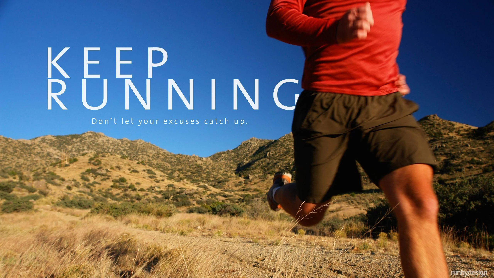
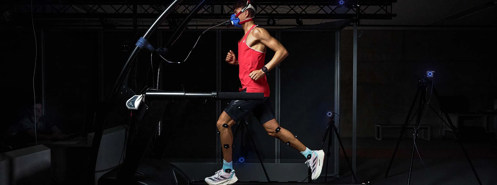

Become More. Every Day.
Discover what AJAX has to offer.
Discover moreOur Story

AJAX is an athletic clothing brand dedicated to endurance athletes and individuals committed to becoming the best version of themselves through unwavering dedication and showing up day after day. Based in Chelsea, Quebec, AJAX was established in September 2026 with the belief that progress is earned through discipline, resilience, and consistent effort. We offer athletic apparel designed to support individuals through demanding training sessions, endurance events, outdoor adventures, and everyday challenges. Whether you're pushing your physical limits or taking small, consistent steps toward personal growth, AJAX is here to support your journey. Become More. Every Day.
